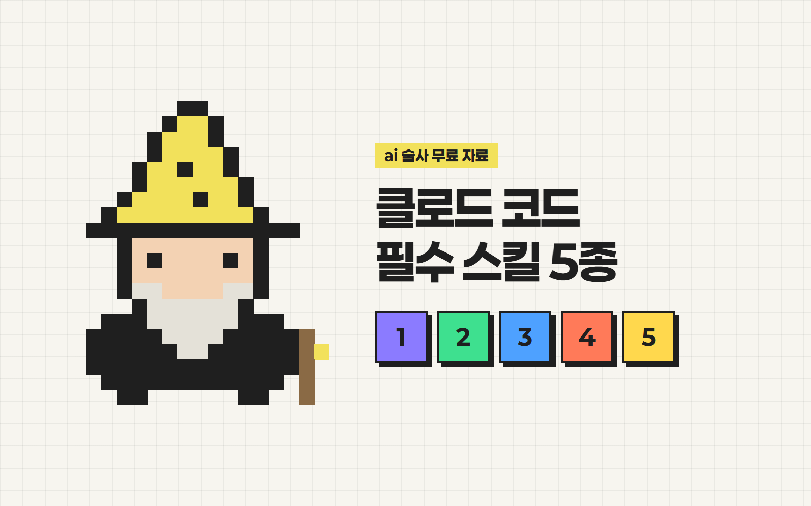

안녕하세요 ai 술사 성준입니다.
클로드 코드 필수 스킬
5종 한 번에 설치하기
클로드 코드, 그냥 쓰면 반만 쓰는 거예요.
스킬 5개만 깔아도 기억·검색·계획·디자인이 달라져요.
제가 초간단으로 알려드릴게요.
준비물
- 1Claude 유료 계정 (Pro 이상)
- 2클로드 코드가 설치돼 있을 것
- 3Node.js (스킬 2 Playwright가 써요)
5개 한 번에 설치
문장 하나 복붙이면 끝나요.
- 1클로드 코드를 열어요.
- 2아래 문장을 복사해서 붙여넣어요.
claude plugin install 명령어로 claude-plugins-official에서 이 5개 플러그인을 설치해줘: claude-md-management, playwright, context7, superpowers, frontend-design
- 3다 깔리면 이걸 입력해서 적용해요.
/reload-plugins
입력창에 / 치면 새 스킬이 보여요.
하나씩 깔고 싶다면
한 줄씩 입력 → "Install for you" 선택
/plugin install claude-md-management@claude-plugins-official /plugin install playwright@claude-plugins-official /plugin install context7@claude-plugins-official /plugin install superpowers@claude-plugins-official /plugin install frontend-design@claude-plugins-official
데스크톱 앱이면 입력창 + 버튼 → Plugins → Add plugin에서 이름으로 찾아도 돼요.
claude-md-managementCLAUDE.md 관리
뭐가 좋아져요
대화가 길어지면 처음 한 말을 까먹죠. 명령어 한 줄이면 이번 대화에서 배운 걸 CLAUDE.md(기억 파일)에 정리해 줘요. 자동은 아니라서 직접 입력해야 해요.
이렇게 써보세요 (작업 끝날 때)
/revise-claude-md
내 CLAUDE.md 최신인지 점검해줘
playwrightPlaywright
뭐가 좋아져요
클로드가 테스트용 브라우저를 따로 띄워서 직접 열고, 읽고, 클릭하며 잘 되는지 확인해요.
이렇게 써보세요
playwright로 내 사이트 열어서 버튼 전부 눌러보고, 안 되는 거 알려줘
context7Context7
뭐가 좋아져요
최신 공식 문서를 보고 답해서 지어내는 게 줄어요.
이렇게 써보세요 (끝에 use context7)
Supabase로 이메일 로그인 기능 만들어줘. use context7
superpowersSuperpowers
뭐가 좋아져요
바로 짜지 않고 브레인스토밍 → 잘게 쪼개서 하나씩 해요.
이렇게 써보세요
할 일 관리 앱 만들고 싶어. 바로 만들지 말고 브레인스토밍부터 같이 하자
frontend-designFrontend Design
뭐가 좋아져요
코드 전에 스타일부터 정하고 끝까지 일관되게 만들어요.
이렇게 써보세요
동네 빵집 홈페이지 만들어줘. 흔한 AI 느낌 말고 디자인 방향부터 정하고 시작해줘
이렇게 써먹어요
- 작업 끝날 땐
/revise-claude-md - 사이트 확인은 "playwright로 열어봐"
- 최신 정보가 필요하면 끝에 "use context7"
- 큰 작업은 "브레인스토밍부터 하자"
- 화면 만들 땐 "디자인 방향부터 정해줘"
궁금하신 점은 DM으로 편하게 물어봐 주세요 🪄
From. ai 술사 | 성준